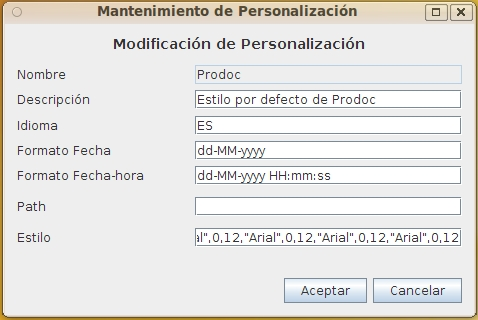

Customizations Maintenance
When selected in the form Customizations List one of the options to add, delete, modify or copy the Customizations will appear this form with different fields on or off.
This form contains the information:
- Customization Name: Customization identifier whose value can not be repeated or changed once assigned. You can have a maximum length of 32 characters. (Eg "RRHH_Portugal")
- Customization Description: Description of the customization that allows to understand and remember the meaning of it. You can have a maximum length of 128 characters. (Eg: "Portuguese Customization for Human Resources in Portugal")
- Language for the user interface: Language in which displaying all the literals in message and OPD. Literals items (documents, folders, etc.) are always presented as created in this version of OPD no support for multilingual objects. We use the ISO 639-1 two-character. For details see Languages
- Input and display format of the Dates: Format in which to display the date. (Eg. "MM/dd/yyyy")
- Input and display format of the Date-time: Format in which to display the date and time. (Ej. "MM/dd/yyyy HH:mm")
- Path parameter for the Web client: Relative path within the web application where all the elements that affect the appearance. OPD includes some styles in different subdirectories which may be copied, changing only the desired items. When you specify a path should always be created all the necessary elements (CSS, images, Javascript, etc.) so it's best to copy and modify the desired items.
- Fonts to be used on the Java Swing client: Sources used for the Swing interface. For each element you indicate the type of font, font attributes (as defined by awt.font) and size for the elements:
- Menu
- Folders Tree
- Element Lists
- Dialog Forms

Ver: Customizations List
Help Index OpenProdoc